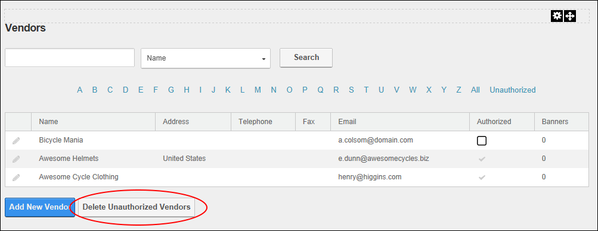

How to permanently delete all unauthorized vendors from the Vendors module. Deleting a vendor does not delete any related Vendor banners from the site's Digital Asset Management module which is located on the Admin > File Management page, however the banners will no longer be displayed in the banners module.

Deleting all Unauthorized Vendors